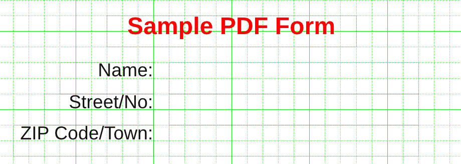
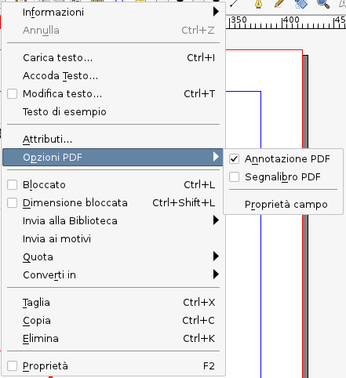
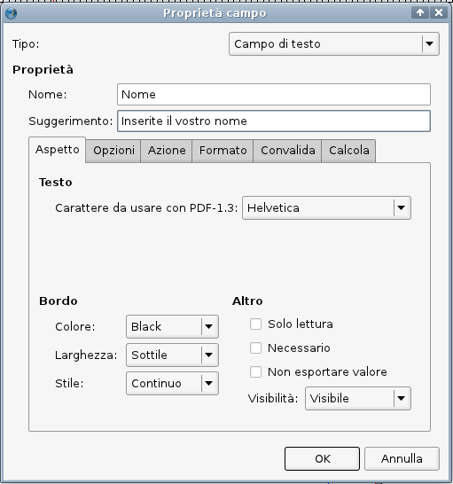
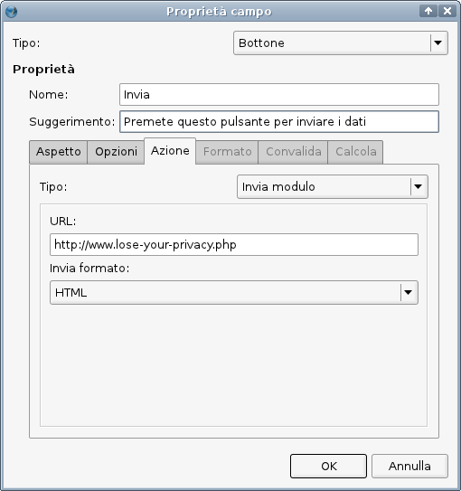

Uno dei vantaggi offerti da Scribus è la possibilità di creare formulari PDF con script JavaScript incorporati (come descritto nella Adobe JavaScript Reference).
È semplice creare un formulario con Scribus. Cominciate col creare un nuovo documento facendo clic sull'apposita icona, oppure con File > Nuovo nel menù principale.
Poi attivate la griglia (Pagina > Aggancia alla griglia) e rendetela visibile (Vista > Mostra griglia). Questo vi aiuterà a posizionare correttamente i campi del formulario nella pagina. Poi create le cornici di testo che conterranno le descrizioni del campi.
|
 |
|  |
Come potete vedere dalla schermata qui sopra, in tutti i campi del formulario PDF il bordo della cornice è in colore blu. Per modificare le proprietà di un campo, fate clic col tasto destro e selezionate “Opzioni PDF > Proprietà campo”:
|  |
Nella finestra di dialogo “Proprietà campo” la maggior parte degli elementi hanno significato evidente, e qui non è possibile spiegare tutte le opzioni in dettaglio. Per lo scopo di questa introduzione è importante che assegniate un nome unico a ciascun campo di testo PDF e che il tipo del campo sia “Campo di testo.” Il nome è importante, perché può essere utilizzato da script esterni che elaborano i dati inseriti nel formulario, ad esempio se esso è utilizzato per inviare i dati a un sito. Potete anche fare in modo che sia Scribus a validare la correttezza dei dati inseriti dall'utente del PDF, ad esempio se un campo richiede un valore numerico. Le possibilità di validazione di Scribus sono limitate, e se non sono sufficienti al vostro scopo potete servirvi del JavaScript per crearne di più sofisticate.
|  |
Per inviare dal vostro visualizzatore PDF i dati inseriti, dovete aggiungere un pulsante “Invia” al formulario. Create un pulsante come spiegato sopra e aprite la finestra di dialogo delle proprietà del campo dal menù contestuale:
|  |
Osservate che la scheda “Azioni” contiene molte più azioni, oltre a “Invia modulo”, come potete vedere nel menù a discesa “Tipo.”
Quando esportate il formulario in PDF, è consigliabile scegliere almeno la versione PDF 1.4 nella finestra di esportazione PDF.
Autore: Maciej Hanski, ottobre 2003
Aggiornato da Christoph Schäfer, settembre 2011